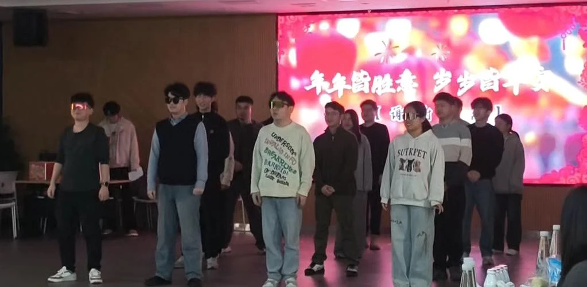
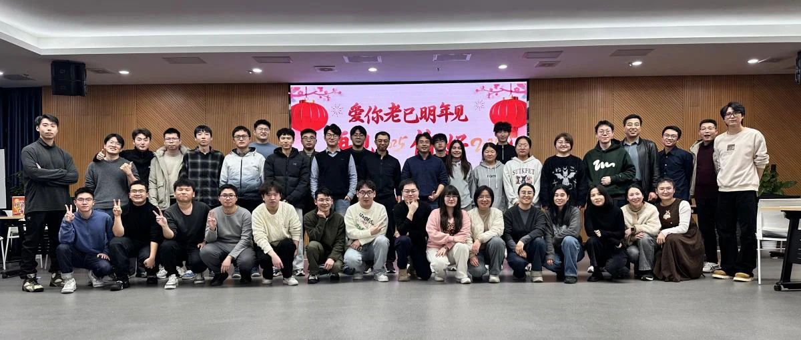

12月30日的夜幕下，iMED团队在4009号房间如约举行了一场别开生面的元旦联欢晚会。随着新一年的钟声临近，团队的每一位成员都带着对未来的期待与祝福汇聚在一起，欢笑与歌声交织成了一幅充满温馨与活力的画卷。这不仅仅是一次庆祝，更是一次心灵的交流和团队的凝聚。
晚会在12位成员的精彩的企鹅舞中拉开帷幕，充满节奏感的舞步与动感十足的旋律瞬间引爆了全场的热情，大家在欢笑和掌声中共同迎接即将到来的2026年。现场的气氛活跃，欢愉与期待弥漫在每个人的心间。

互动环节则让晚会氛围更加轻松有趣。通过蒙眼喝可乐、按人数抱团、团队接力等创新游戏，获得抽奖券和红包，团队成员们不仅展现了默契配合，还在欢乐的氛围中增进了彼此间的沟通与理解。无论是游戏中的挑战，还是笑声中的互动，都让每个人感受到了属于iMED团队的温暖与力量。
接下来的节目表演环节为大家带来了更多惊喜。甄嬛传-滴血验亲之论文风雨的幽默演绎让全场捧腹大笑；特别的扑克牌魔术表演给晚会带来了一丝神秘的色彩。而后面悠扬歌声则为这场元旦庆祝增添了一份宁静与温馨，歌声响起那一刻，整个会场仿佛都沉浸在音乐的旋律与情感的波动中，掌声与喝彩声此起彼伏。
晚会中的互动环节“组队考验记忆力”则打破了传统形式，每一位成员都积极参与其中，带来了更多欢笑与惊喜。而随着晚会进入尾声，期待已久的抽奖环节引发了全场的欢呼，特等奖888元奖金等丰富奖品的赠送，为幸运的成员们送上了新年的第一份好运。
在最后的抽奖环节过后，晚会圆满落下帷幕。此次元旦联欢晚会，不仅让大家回顾了一年的点滴与成就，更让团队之间的情感更加紧密。iMED团队全体成员将在新的一年里继续携手并肩，迎接更加辉煌的未来。新的一年，新的开始，愿大家在2026年里科研顺顺利利，家庭幸福安康！

编辑：沈杰